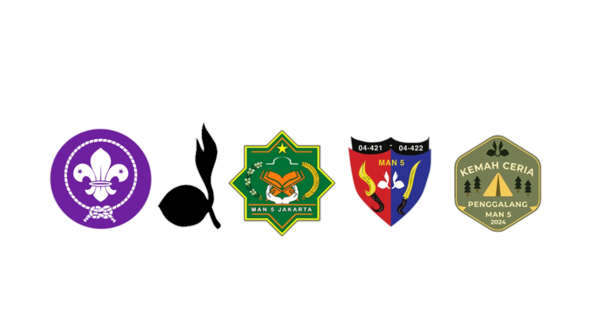

Beranda
Tentang Kami
Sosial Media
Beranda
Tentang Kami
Sosial Media
Scout 5 Jakarta
Informasi tentang kami
click ↓
SATYAKU KUDARMAKAN, DARMAKU KUBAKTIKAN
Salam Pramuka!
Scout 5 Jakarta adalah sebuah organisasi Kepramukaan yang bertempat dan di naungi oleh MAN 5 JAKARTA